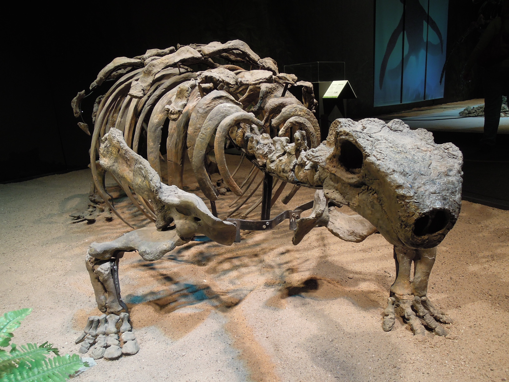
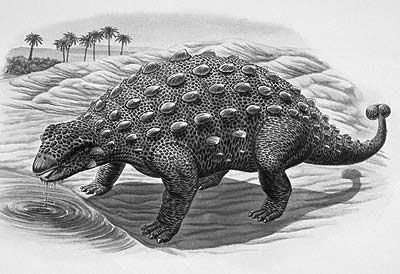

Română
Talarurusul, numit de către Evgeny Maleev în 1952 putea fi regăsit predominant în Mongolia, Regiunea Bayan Shireh. Supranumit "Coada coș de răchită", acest dinozaur erbivor măsura între 4 și 6 metri lungime. Talarurusul a trăit pe vremea Camponianului din Cretacic, găsindu-se numeroase exemplare de fosile.
English
The Talarurus, named by Evgeny Maleev in 1952, could be found predominantly in Mongolia, Bayan Shireh Formation. Nicknamed the "Wicker basket tail", this herbivorous dinosaur measured between 4 and 6 meters in length. The Talarurus lived during Camponian of the Cretaceous , and there were numerous fossil specimens that have been found.